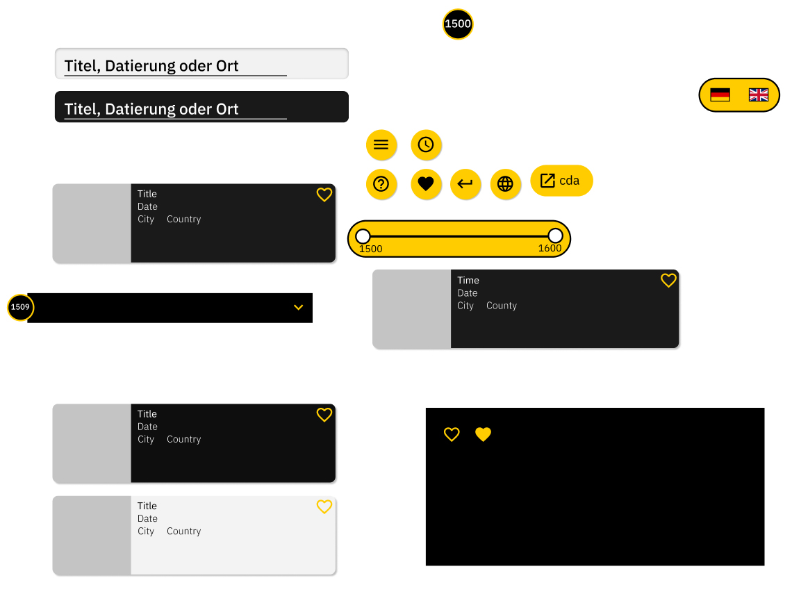

Screendesign Dokumentation von Methusshan Elankumaran und Ferdi Yüce
Was war die Ausgangsbasis / der Auftrag?
Der Auftag war es den Inhalt des bestehenden Lucas Cranach Archieves in eine zeitgemäße und funktionelle Timeline zu etablieren. Hierbei sollen seine Werke simpel und übersichtlich in einen Zeitstrahl eingebracht werden, welcher ohne großen Aufwand von unseren Stakeholdern genutzt werden soll. Die Timeline soll so funktionieren, dass durch eine Kontextualisierung die verschiedenen Kategorien miteinander in Bezug gebracht werden. Ebenfalls erwünscht sind Anreicherungen der schon vorhandenen Daten durch zusätzliche Informationen, wie zum Beispiel Ereignisse, Personen oder historische Rahmenbedingungen ergenzt werden. Im allgmeinen soll der Fokus jedoch erstmal auf das einbetten von vorhandenen Informationen gelegt werden. Die Literatur soll referenziert werden aber keine visuelle Präsenz in der Timeline haben.

Welche Elemente, Screens und Regeln wurden entwickelt?
Bei den einzelnden Elementen werden Regeln befolgt, welche bei der Konzeptionierung strukturiert durchdacht wurden.
Die Elemente sind hierbei in verschiedenen Kategorien zu betrachten.
Die Elemente, welche zur Interaktion dienen und die Interaktionsfarbe Gelb tragen, sind in der Smartphonevariante hauptsächlich kreisförmig gehalten. Diese Form ist mit den Finger einfach zu erfassen und bietet mit der Platzierung in der unteren rechten Ecke eine vereinfachte Bedienung für das Smartphone, da die meisten Nutzer Rechtshändler sind. Die Icons werden aus dem Material Desgin Pack genutzt.
In der Desktopvariente bleiben die Farbgebung und die Icons gleich. Nur die Form ändert sich zu einem langgezogenem Kreis, da die Desktopversion in die horizontale länge geht.
Die Suchleiste wird in beiden Varianten als weiße, abgerundete Fläche dargestellt. Somit fällt diese auf dem dunklem Hintergrund besonders auf und bietet dem Nutzer durch die platzierung auf dem Header schnellst wie möglich die Option eine individuelle Suche durchzuführen.
Eines der Elemente sind die Smartcards, diese werden in der Smartphonevariante als leicht abgerundete Rechtecke visuallisiert. Auf der Smarcard findet man links eine Preview zum Gemälde in Form eines Quadrates. Rechts, nah am Bild kann man den Namen und die wichtigsten Informationen zum gemälde sehen. Der Text soll anhand des Gesetzes der Nähe zeigen, dass dieser zum Text gehört. Außerdem sieht man durch leichte transperenz des schwarzen Hintergrundes, das Gemälde über die ganze Smartcard. Dieses ist ein Mittel der Optik. Zuletzt sieht man auf der rechten Seite der Smartcard ein Interaktionsfeld, welches ein Herz darstellt. Diese Interaktion ermöglicht das favorisieren eines Gemäldes.
Auf der Desktopversion finden sich die Smartcards in einem quadratischem Design wieder. Hier wird das Bild als Preview in die ganze Smartcard verpackt und kann durch das drüberfahren mit der Maus einen Transperenz Effekt hervorrufen, welcher auf dem Bild die wichtigsten Informationen erscheinen lässt. Oben rechts in der Ecke findet man den Button für das favorisieren eines Gemäldes.
Das Jahr mit dem man auf der Timeline interagieren will, zeigt sich auf der Smartphoneversion, wie auch die anderen interaktiven Buttons in einer Kreisform. In einem schwarzen Kreis mit gelbem Rahmen findet sich das Jahr in weißer Schrift wieder. Dieser ist auffällig und fällt dem Nutzer schnell auf, da diese auf der linken Seite von den Smartcards liegen. Also am Anfang der Leserichtung.
Die Desktopversion verschachtelt das Jahr in einem schwarzem Balken, welcher durch einen Pfeil, der nach unten zeigt interagierbar ist und bei interaktion aufklappt, so dass die Smartcards erscheinen. Dieser vermeidet das unendliche scrollen und spart Platz.
Außerdem befindet sich auf jeder Big Card ein interaktiver Button, welcher zu dem Bild im Archiv führt.
Dementsprechend wurden gezielt Screens erstellt, welche eine relevanz für das ganze Konzept mitbringen. Auf der Smarphonevariante findet man fünf verschiede Layouts, welche verschiedene zwecke haben. Der Mainscreen ist der Bildschrim, auf dem man landet. Von dort aus kann man die Timeline bedienen, die Suche tätigen und das Menü aufrufen. Die Suche bietet hier seinen eigenen Bildschirm, wo Suchergebnisse betrachtet und angewählt werden können. Auf der Timeline erscheint ein Big Screen zu dem Gemälde. Dieser Screen steht in einem 1:1 Verhältnis von Bild zu Text. Da beide Informationen die gleiche Relevanz beinhalten. Außerdem gibt es einen Screen, welcher die Favoriten abspeichert und auf abruf über das Menü listet. Das Menü und die Hilfestellung erscheinen nicht direkt als eigene Bildschirme, sondern werden durch eine Transperenz über dem Mainscreen angezeigt.
Die Desktopversion beinhaltet sechs Screens. Hier wurde mit dem selben Prinzip wie bei der Smarphoneversion gearbeitet und beinhaltet somit ähnliche Screens und deren Funktionen. Auf dem Mainscreen sieht man die Timeline, die Suchleiste und das Menü. Über die Suche gelangt man auf den Searchscreen und kann seine Suchergebnisse oder Suchempfählungen betrachten. Beim klicken einer Smartcard, gelangt man auf den Big Screen dieses Gemäldes. Dort besteht die Option das Bild im Archiv zu besuchen oder zu dem Literaturverzeichnis zu gelangen, welcher über einen eigenen Screen verfügt. Außerdem kommt man über das Menü in den Screen für die favoritisierten Bilder. Hier sind diese nach der Zeit sortiert, in der man diese geliked hat. Auch hier wird die Hilfestellung über dem Mainscreen eingeblendet.
Die Menüs erscheien bei beiden Versionen mit einer Animation und spiegeln somit durch das Gesetz des gleichen Schicksals wieder, dass diese zusammen gehören und den selben Nutzen teilen.
Wie wurden die Kommunikationsziele umgesetzt?
In diesem Projekt wurden die Kommunikationsziele nicht außer acht gelassen. Es wurde professionell nach schon vorhandenen Mitteln gearbeitet. Die folgenden und schon im Archiv vorhandenen Punkte der Kommunikation wurden berücksichtigt und übernommen. Daher sind die zwei Varianten sehr klar gehalten worden, indem nur die notwendigsten Elemente entworfen und umgesetzt worden sind. Das einfache dreifarben-System bietet neben der Übersicht und Klarheit der Seite ein zeitloses Erscheinungsbild. Die Formen der Elemente sind einfach und selbsterklärend gewählt und geben mit der gelben Farbe auf schwarzem Hintergrund ein selbstverständliches Interface her. Die Abstände zwischen einzelnden Objekten und herrabstufungen der Größen sind durch die Renard-Serie bestimmt. Im großen und ganzen bieten die Designs eine einfache, leicht verständliche und zeitlose Oberfläche und machen es dem Nutzer somit leichter sich auf den Seiten zurecht zu finden.
Welche Systematik liegt hinter dem Gestaltungskonzept?
Das Gestaltungskonzept wurde so gestaltet, dass man innerhalb einer Seite so wenig scrollen muss wie möglich. Dazu wurden die Bilder in einzelne Jahrzehnte eingeteilt, welche durch verschiedene Dropdownleisten ausgeklappt werden können. Diese Leisten dienen auch dazu für Übersicht zu sorgen und zu verhindern, dass man lange braucht, um sich Bilder aus einem anderen Jahrzehnt anzuschauen. Um dieses Konzept auch auf einem Smartphone umzusetzen, ohne die Bilder zu klein zu gestalten und trotzdem langes scrollen zu verhindern wurden die Bilder nicht nur in die einzelnen Jahrzehnte, sondern auch in die einzelnen Jahre eingeteilt. Zudem wurde den Farben eine Rolle innerhalb des Systems zugeteilt. So ist Gelb die Farbe, die für Interaktionsobjekte verwendet wird. Hierbei wurde das Gesetz der Ähnlichkeit angewendet. Schwarz ist die Farbe, welche für statische Objekte verwendet wurde und Weiß die Schriftfarbe und die Farbe für Eingabefelder. Außerdem wurden in diesem Gestaltungskonzept viele Icons benutzt, um die Benutzung so einfach wie möglich zu machen. Durch die Icons müssen beim Hinzufügen einer neuen Sprache nur wenige Teile abgeändert werden. Für die Abstände und die Schriftgrößen wurde die Renard-Serie als Abstufungssystematik gewählt.
<